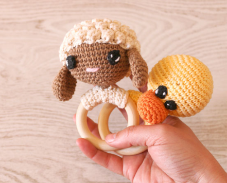

En este pueblo alemán tienen mucho tiempo libre. Se han dedicado a decorar este bonito puente a base de crochet. ¡Qué bonito! Pero no es el único sitio, en España también tenemos pueblos así. En un pueblo de León, Villoria todo el
pueblo ha puesto su esfuerzo para crear un gran árbol de Navidad a base de cuadros de crochet. ¡Impresionante! Aquí podéis leer la noticia.
Qué aguja escoger
5 de octubre de 2021
Como elegir la aguja adecuada para los amigurumi DIY con trucos para saber como elegir la aguja adecuada para tejer tus amigurumi sin que se queden esos agujeros que no quedan nada estéticos. No elegir la aguja correcta es un fallo
muy común, sobre todo en principiantes.
Ojos para amigurumi
5 de octubre de 2021
Cuando tejemos un amigurumi tenemos que decidir que tipo de ojos vamos a utilizar. Podemos poner ojos de seguridad para que los niños no los arranquen y se los puedan tragar p simplemente tejerlor. Aquí dejo unos video tutoriales con
varias opciones. Espero que les gusten!

Sonajero redondo
5 de octubre de 2021
En este video tutorial puedes aprender a tejer estos bonitos sonajeros con asa redonda. Hay dos modelos. Una linda oveja y un patito amarillo.
Patucos a crochet
5 de octubre de 2021
Hoy te enseño como tejer unos patucos a crochet paso a paso. La verdad es que quedan preciosos y son muy cómodos. Muchas veces los bebés no llevan zapatos y esta es una alternativa bonita y cómoda para que de vez en cuando quiera llevar
patucos. Además, en verano puedes utilizar hilo más suave y fresco (algodón) y en invierno un hilo más calentito (lana). ¿Te animas a tejer estos patucos? Materiales 30 g de lana. Recuerda que en verano es mejor algodón 100% y
en invierno lana. Aguja de crochet del número 3.5 mm. Puntos que vamos a utilizar Cad.: cadeneta P.m.a.: punto medio alto P.b.: punto bajo P.d.: punto deslizado Dism.:…
Gorrito oso
29 de septiembre de 2021
Hoy te enseño como tejer este bonito gorro con orejas de osito de peluche. Es super fácil y muy rápido si utilizas una lana gruesa. Podéis ver que queda muy bien. Eso sí, hay que tomar bien las medidas de la cabeza del niño.
¡Bienvenidos!
28 de septiembre de 2021
Bienvenidos a mi blog. Aquí podréis encontrar nuevos tutoriales y otras cosas curiosas. Si queréis podéis comentar. Estaré encantada de responderos.